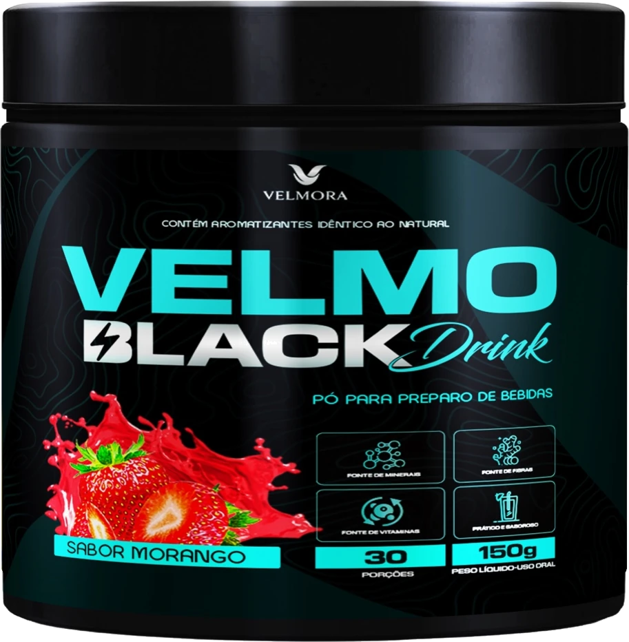
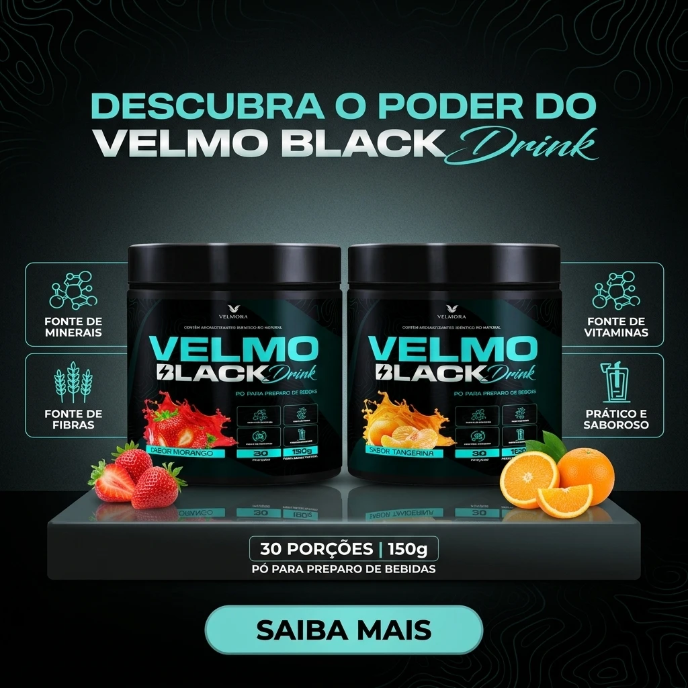
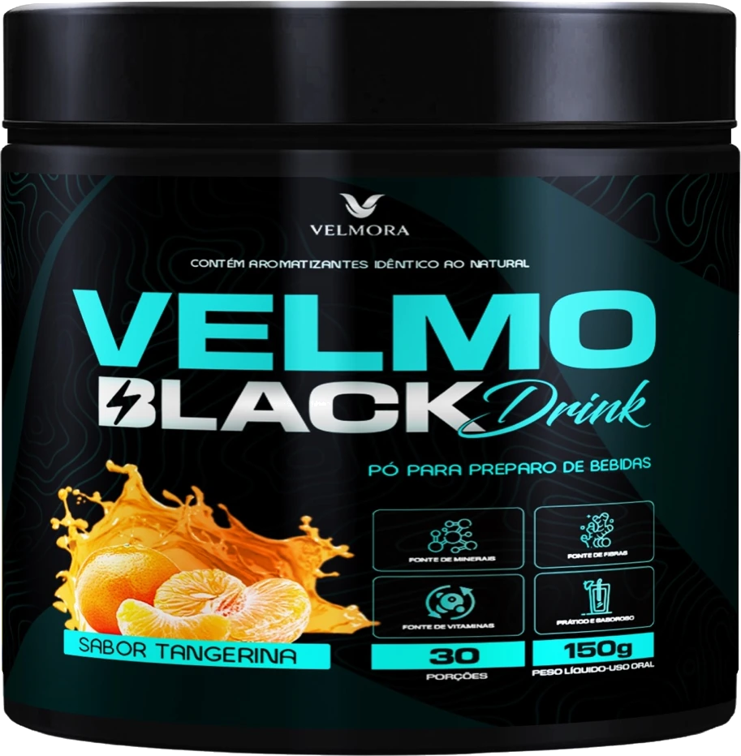

SABOR MORANGO●

OFERTAS DE BLACK FRIDAY
Escolha entre morango e tangerina e encontre seu kit de Black Friday.
Ver ofertas da Black Friday150 g por pote · 30 porções · Dois sabores

PRAZER EM SE CUIDAR
Velmo Black Drink é um pó para preparo de bebida com fibras, vitaminas e nutrientes. Uma opção prática para complementar sua alimentação.
Um intervalo na correria. Um copo com o seu sabor favorito. Um convite para reservar um momento do dia para você.
Veja como é simples prepararENCONTRE O SEU FAVORITO
Dois jeitos de tornar esse momento
ainda mais gostoso.


CONHEÇA A FÓRMULA
Inulina, polidextrose e chia.
Magnésio, zinco, cromo e biotina.
Hibisco e maçã em pó.
A composição pode variar entre sabores. Confira a lista completa de ingredientes, os alergênicos e as orientações no rótulo da sua embalagem.
CABE NO SEU DIA
Siga sempre as orientações do rótulo da sua embalagem.
Escolher meu saborColoque 100 ml de água em um copo.
Acrescente 1 dosador de 5 g.
Mexa bem. Consuma uma vez ao dia, conforme as orientações da embalagem.
OFERTAS DA BLACK FRIDAY
Escolha seu sabor e confira o preço promocional no checkout.
150 g · 30 porções por pote
Você será direcionado ao checkout da Hest para finalizar a compra. Confirme os valores e as condições de entrega antes de pagar.
Sabor e kit selecionados antes da compra.
Frete e prazo conforme seu CEP no checkout.
Conforme as condições informadas pela marca.
DO PEDIDO AO RECEBIMENTO
Fotos e mensagens de quem recebeu seu Velmo.
MAIS TRANQUILIDADE PARA ESCOLHER
Você conta com garantia de 30 dias. Se não se adaptar ou não gostar, você pode solicitar reembolso conforme as regras da marca.
Consulte no checkout as condições aplicáveis ao seu pedido e o canal de atendimento para solicitar o reembolso.
PODEMOS AJUDAR?
Respostas para conhecer melhor
o seu novo ritual.
É um alimento em pó para preparo de bebida, com fibras, vitaminas e minerais, para complementar uma alimentação equilibrada.
Para preparar, dilua 1 dosador de 5 g em 100 ml de água e consumir uma vez ao dia. Confira sempre as instruções do rótulo do seu produto.
A embalagem apresentada contém 150 g e indica 30 porções de 5 g.
Morango e tangerina estão disponíveis em opções de 1, 3 ou 5 potes. Escolha uma opção acima para acessar o checkout correspondente.
Não. O produto deve complementar a alimentação e não substitui refeições ou hábitos equilibrados.
Não há prazo ou resultado individual garantido. A resposta varia entre pessoas e depende da alimentação, dos hábitos e das condições individuais.
Consulte um profissional de saúde antes de iniciar o consumo, especialmente se você faz tratamento contínuo. Não altere seus medicamentos por conta própria.
O uso não é recomendado para crianças. Gestantes e lactantes devem consultar um profissional. Verifique as advertências e a faixa etária no rótulo.
Confira a composição e os alergênicos antes do consumo. Em caso de sensibilidade ou desconforto, interrompa o uso e procure orientação profissional.
A garantia é de 30 dias, com solicitação de reembolso conforme as regras da marca. Consulte as condições e o atendimento indicados no checkout.
Consulte o preço promocional, as formas de pagamento e o prazo para seu CEP no checkout.
ESSE MOMENTO É SEU
Encontre o sabor que combina com a sua rotina.